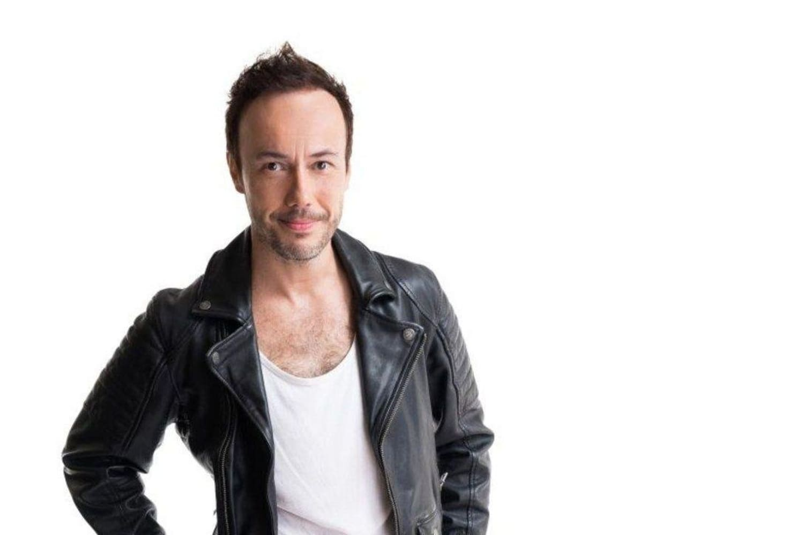

Papp Szabolcs
Papp Szabolcs a Supernem zenekar énekese és basszusgitárosa. 1976.02.19-én született Békéscsabán. Gyermekkora óta a Rock'n'Rollon nevelkedett és az ehhez kapcsolódó életmód áll legközelebb a szívéhez. Érdekesség, hogy amikor beszél akkor nagyon dadog, de éneklés közben még a gyakran beszédhibával nem rendelkező embereket is megizzaztó szövegeket is a legnagyobb könnyedséggel énekli el. Általában vidám hangulat jellemzi. Mostanság talán annyira nem, de nem olyan régen egymás után láthattuk különböző kereskedelmi csatornákon zsűriként vagy műsorvezető szerepében.
Forrás